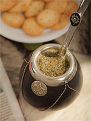

About me
As an international student from Argentina, I am eager to provide a different worldview to the work environment, learn, and discover all the experiences available for my future career.
I have had pertinent graphic design, web design, and social media management experience as well as some customer experience when I reached out to clients while developing my own business plan and strategy for a personal dessert-making enterprise that I ran back in Argentina called “Mar de Tentaciones”. I have taken three major specific classes like Media Design, Intro to Advertising, and Intro to Design. On top of that, I have personal and professional experience as a photographer for The Missourian and I am part of the Leader Group (exec. board) of AdInk as well as a volunteer for the Social Media and Graphic Design Committee for which I regularly post on Facebook and design flyers.
Meet my best friend: the "mate"
This is what I miss the most form home. Click on it to see what it looks to learn about the process of drinking it.
